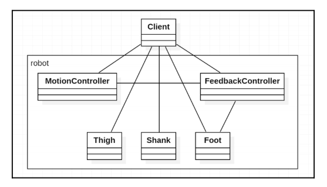

The Façade Pattern organizes subsystems and provides a unified higher-level interface. An example that might be familiar to you is a modular system. In JavaScript (and of course TypeScript), people use modules to organize code. A modular system makes projects easier to maintain, as a clean project structure can help reveal the interconnections among different parts of the project.
It is common that one project gets referenced by others, but obviously the project that references other projects doesn't and shouldn't care much about the inner structures of its dependencies. Thus a façade can be introduced for a dependency project to provide a higher-level API and expose what really matters to its dependents.
